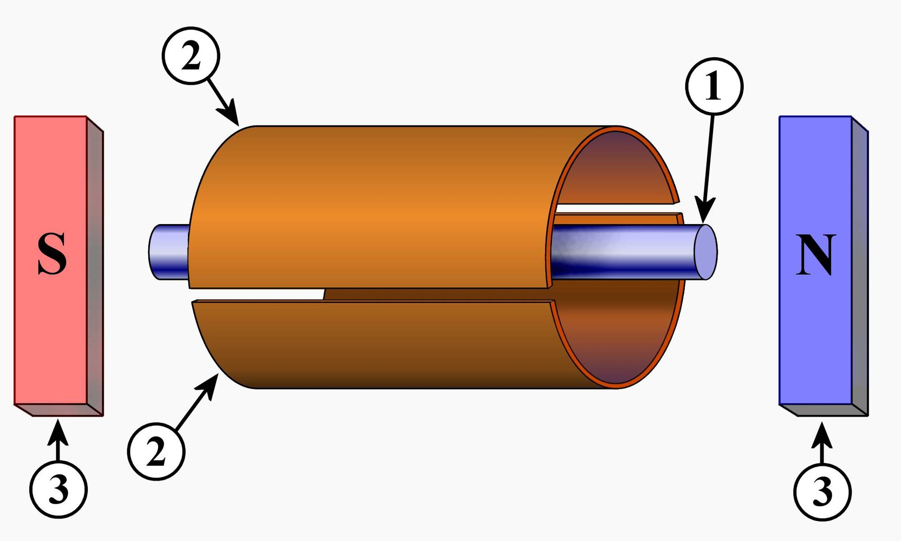
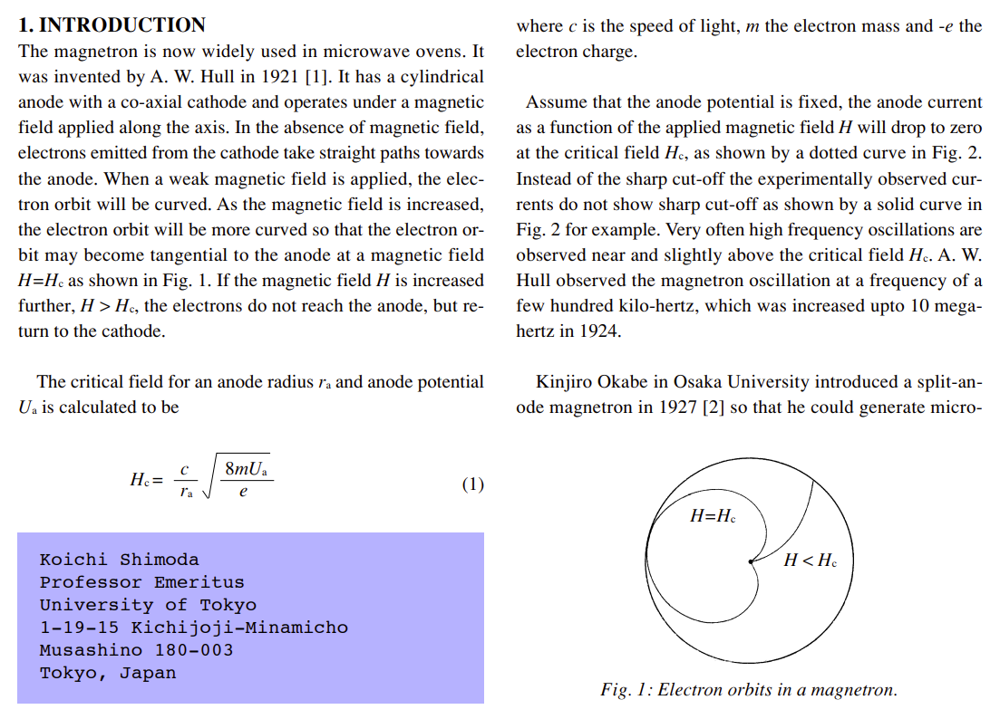
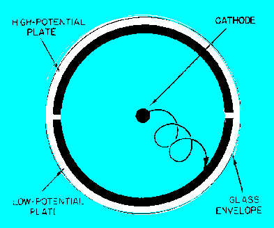
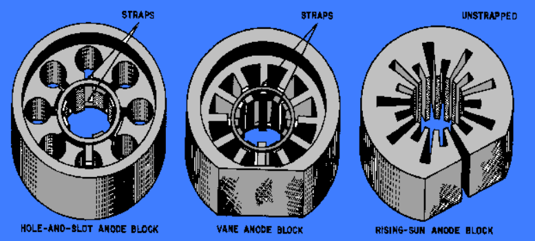
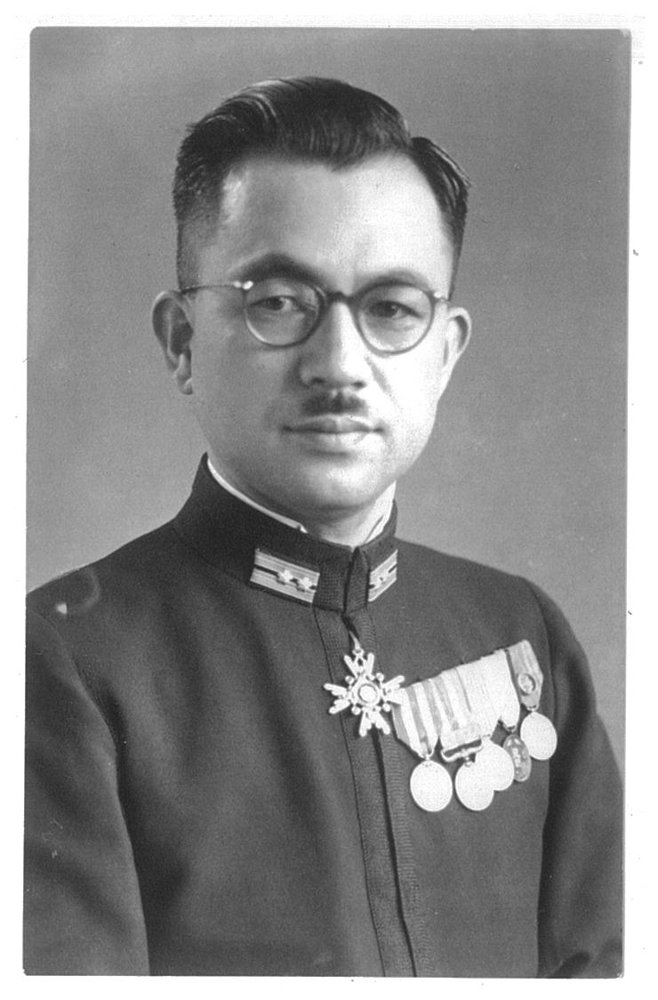
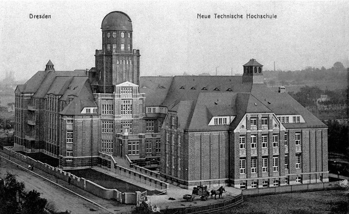

과달카날에서의 레이더 이야기 (2) - 상상력의 부족은 외국어로 메운다
게시: 2024-02-15T06:30:46+09:00
<일본인에게는 과학적 재능이 없었을까?> 1920~30년대 일본에도 세계적으로 유명한 전파 분야 석학이 있었으니 바로 도호쿠(東北) 대학의 야기 히데쯔구 교수. 이 양반이 지향성 안테나인 야기-우다 안테나를 만든 그 야기 교수임. 이 양반은 고주파 생성 방법에 대해서도 당연히 관심이 있었음. WW2가 시작된 1939년, 고주파 레이더에 사용할 cavity magnetron을 만든 영국의 John Randall 교수와 그의 대학원생 조교 Harry Boot도 자기들이 마그네트론을 처음 만든 것이 아니었음. 지난 레이더 개발 이야기 (16) - 마침내, Cavity Magnetron! 에서도 소개했듯이, 그 양반들도 1916년 미국 제네럴 일렉트릭 사의 엔지니어 Albert W. Hull이 발표한 논문에서 마그네트론이라는 이름과 그 원리를 처음 봤던 것. 그리고 그 논문은 당연히 일본에서도 볼 수 있었고, 야기 교수도 그 마그네트론이라는 물건에 대해 관심이 많았음. 그러나 야기 본인은 그 연구에 깊숙히 관여하지 않았고, 대신 자신의 첫번째 박사 과정생이던 오까베 긴지로(岡部 金治郎)에게 이거 연구해보라고 시킴. 1926년, 오까베는 헐의 원래 마그네트론보다 훨씬 더 짧은 파장을 내는 마그네트론 장치를 만들어 1929년 미국에서 특허까지 받음. 더 나아가, 오까베는 마그네트론에 양극판 하나가 아니라 양극판 2개를 사용한 split-anode magnetron (균열 양극 마그네트론)을 고안해냄. 이건 상당히 획기적이고 기발한 발명이었고, 이것으로 오까베는 1928년에 32세의 나이로 박사 학위를 받음.

(오까베 긴지로(岡部 金治郎)라는 학자가 1926년 개발한 split-anode magnetron. 1)은 음극(cathode), 2)가 양극(anode), 3)은 자석. 원래 알버트 헐이 만든 마그네트론은 일반적인 진공관에서 음극으로부터 나와 양극으로 흐르는 전자의 흐름을 자기장으로 제어하는 것이었는데, 오까베는 그 양극을 1장의 금속판이 아니라 2장의 반원형 금속판이 음극을 둘러싼 모양으로 변형시킴. 저 2장의 양극은 서로 다른 전위를 가지도록 조정. 이런 걸 보면 그냥 잘 외우고 수학 문제 잘 푼다고 훌륭한 인재가 아니라 모든 면에 있어서 상상력이 풍부해야 하는 듯.)

(Split-anode magnetron이 일반 마그네트론에 비해 어떤 특성을 가지는지 설명해보고 싶어서 구글링을 해보니 뭔가 설명이 자세히 나오기는 하지만 저 공식을 보고 그냥 포기. 이래서 상상력이 풍부하더라도 역시 세상에 쓸모가 있는 일을 하려면 수학을 잘 해야 하는 듯.)

(그러나 수학을 잘 못해도 이해할 수 있는 것은 역시 그림. 전자가 음극에서 튀어나와 양극으로 날아갈 때, 당연히 더 높은 전위를 가진, 즉 전자를 얻으려는 압력이 더 큰 양극판으로 날아갈텐데, 그 전자 흐름이 자기장 영향을 받아 굴절되면서 결국 더 낮은 전위를 가진 양극판으로 날아감. 이때 더 높은 전위를 가진 양극판으로 날아가려고 몸부림치는 전자 흐름이 자기장의 영향으로 억지로 더 낮은 전위를 가진 양극판으로 향하면서 소용돌이 치는 궤적을 그림. 이것이 마치 호루라기 속의 공기 흐름처럼, 즉 cavity magnetron 속의 텅 빈 공간 속에서 공명하는 전자 흐름 같은 효과를 내는 것임. 그러니까 split-anode magnetron은 cavity magnetron보다는 약하지만 비슷한 효과를 내면서 고출력 고주파를 얻을 수 있는 것.) 오까베의 이 split-anode 마그네트론은 정말 세계 최초의 것이었고, 이 장치에서는 꽤 안정적으로 17cm 길이 파장의 고주파를 만들 수 있었음. 뿐만 아니라, 여기서 더 나아가 같은 도호쿠 대학의 이토 쯔네오라는 사람은 아예 2장이 아니라 8장의 양극판이 가운데 음극을 빙 둘러싼 형태의 split-anode 마그네트론을 고안. 그 단면적은 마치 귤을 가로로 잘라 놓은 것처럼 보였으므로 일본 연구진은 이를 타치바나 (橘, 귤) 마그네트론이라고 명명. 하지만 이 장치에서도 상용화가 가능한 수준으로 안정적인 고주파 생성은 불가능했으므로 여전히 흥미로운 연구 주제 정도로만 받아들여졌음.

(타치바나(귤) 마그네트론의 그림을 찾으려 열심히 구글링을 했으나 WW2 때 폭격 맞으면서 문서고 샘플이고 다 불타버렸는지 찾을 수가 없음. 이건 일본이 만든 타치바나(귤) 마그네트론이 아니라 일반적인 마그네트론들의 형태지만, 일본의 타치바나 마그네트론의 기본적인 형상은 저 가운데 마그네트론 중에서 가로살(spoke)이 없는 형태라고 보면 될 듯.) 이렇게 레이더를 만들 기본적인 요소 기술들, 즉 야기 안테나와 마그네트론 등의 기술이 모두 갖추어졌지만, 정작 일본에서는 레이더에 대한 연구는 전혀 없었음. 아무도 전파를 이용하여 항공기나 선박의 방위각과 거리를 측정한다는 생각을 하지 않았음. <이과도 외국어는 잘해야 한다> 이토 요지(伊藤 庸二)라는 일본인 학자는 동경제국대학에서 전기공학을 공부한 뒤 일본해군에 장교로 임관. 몇 년간 군함을 타기도 했으나 현역 장교 신분으로 독일 드레스덴으로 유학을 갔고 거기서 결국 1929년 박사학위도 받고 귀국. 이제 중령 계급을 단 그는 해군기술연구소에서 무전기 등 전파 관련 연구를 진행.

(이 양반이 이토 요지 센세. 이토는 전쟁이 끝난 뒤에 당연히 일단 실업자가 되었는데, 역시 기술이 장땡이라고 코덴 전자 회사를 차려 소형 선박 항행용 전파 기기와 어업용 어군 탐지기 등을 만들었음. 그러나 불행히도 1955년 요절. 그럼에도 불구하고 코덴 전자 회사는 그 이후에도 번영했다고.)
당연히 이토도 오까베의 마그네트론에 대해 깊은 관심을 가지고 연구. 그가 이끄는 해군 연구팀은 도호쿠 대학에서 만든 타치바다 마그네트론을 더 개선하여 M3 마그네트론을 1939년에 만들었는데, 이는 수냉식으로서 10cm 파장 길이, 그러니까 3GHz의 고주파로 500W의 출력을 낼 수 있었음. 그러니까 바로 직후에 영국에서 만든 cavity magnetron보다는 출력이 매우 약했던 것. 이 M3 마그네트론으로 무엇을 하라는 거냐는 군부 수뇌부의 질문에 대해, 딱히 할 말이 없던 이토는 야간이나 안개 속에서 선박끼리 충돌을 방지하도록 해주는 고주파를 이용한 경고 시스템을 제안. 이토의 해군 연구팀은 민간 전파회사의 협조까지 얻어 데모 시스템을 만들어 시연을 해보이려 했으나 그 실험은 실패... 결국 상관에게 대차게 까이고 말았음. 그렇게 별로 인정을 못 받던 이토는 중령으로 승진한지 11년 뒤인 1940년에도 여전히 중령 계급. 그런 연구기술 인력에 대한 일본 군부의 태도를 잘 보여주는 부분. 그런 분위기에서 이토는 1940년 후반부, 나찌 독일로 교환 연구원 자격으로 연수를 가게 됨. 이건 독일이 일본에게 기술을 퍼주기 위한 프로그램은 아니었고, 우월한 아리아 인종의 나찌 독일은 열등한 황인종인 일본에게 극비 기술을 전수해줄 생각이 없었음. 그럼에도 불구하고, 이토는 원래 드레스덴 공과대학에서 박사학위를 딴데다 독일어에 유창했으므로 독일 현지 과학자들에게 우호적인 대접을 받음.

(위는 1913년 경 드레스덴 공과대학의 모습. 아래는 현재의 모습인데, 당연히 이 대학도 WW2 중에 폭격으로 완전 박살이 났었음. 아마 현재의 건물도 대대적으로 새로 지은 것일 텐데, 저렇게 옛 모습을 어떻게든 최대한 비슷하게 다시 복원한 노력이 진짜 대단.)
그래서인지 독일 과학자들이 독자적으로 연구하고 있던 레이더 기술은 당시 꽤 극비 사항이었음에도 불구하고 이토의 귀에까지 들어감. 이토는 독일이 개발 중이던 Freya 레이더의 구체적인 세부 사항에 대해서는 전혀 몰랐지만, 그렇게 전파를 이용해 먼 거리의 항공기와 선박을 탐지해내는 기술의 아이디어에 대해서는 알게 됨. 그는 일본에 귀국하기도 전에 레이더라는 물건에 대해 본국에 알렸고 그에 대한 연구를 시작해야 한다고 강력히 주장. 그 주장이 먹혀 1941년 8월, 이토가 귀국하기 전인데도 연구 자금이 배정되었고, Radio Range Finder (RRF, 전파 거리 탐지기)라는 이름으로 레이더 연구가 시작됨. 일본은 일단 독일처럼 4.2m 길이의 파장, 즉 70MHz 정도의 전파로 시제품을 만들어 테스트. 불과 1달만에 진짜 날림으로 만들어진 이 시제품에서 1941년 9월, 일본은 약 100km 떨어진 상공의 폭격기를 탐지하는데 성공. 이것이 Type 1 Model 1 레이더. 게다가 일본은 아직 독일이 가지고 있지 않은 기술을 가지고 있었음. 바로 M3 마그네트론. 이를 이용하여 10cm 파장 (3GHz)의 전파를 이용한 레이더를 바로 다음 달인 10월에 테스트하고, 곧 양산에 들어감.
...이렇게 훌륭한 기술자들을 데리고 있던 일본해군은 대체 뭐가 문제였길래 미드웨이에서 레이더도 없이 망해야 했던 것일까?
다음 편에 계속.